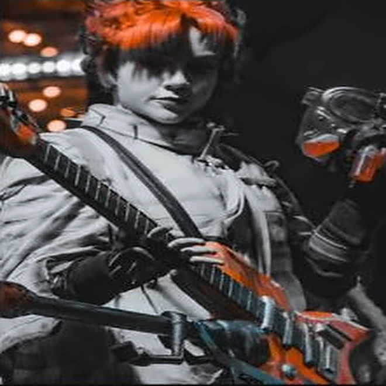
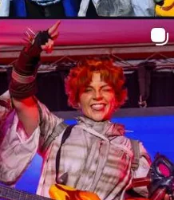
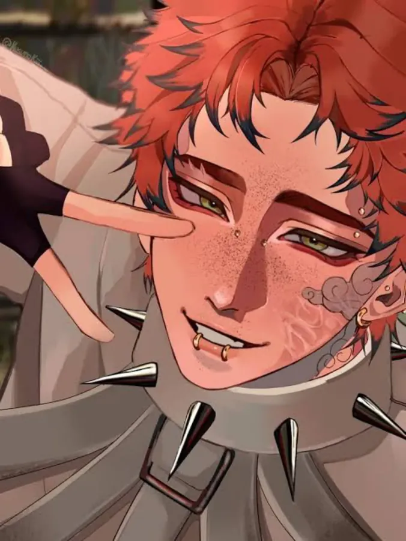

HEXATOMBE · COSPLAY: SAKURAI
FOTOGRAFIA: CRÉDITO A CONFIRMAR
Franco
HEXATOMBE · PERSONAGEMDo figurino à performance: um arquivo visual da caracterização de Franco, reunindo registros de palco, retratos e detalhes do processo.
Franco em detalhes.
Registros disponíveis na demonstração. Imagens de prints foram tratadas; os originais da artista poderão substituí-las.




Créditos e origem: Cosplay e criação: Sakurai (@sakurai_cosmaker). Personagem: Franco, de Hexatombe. Autoria das fotografias, gravação e edição do vídeo a confirmar antes da publicação oficial. As demais imagens são recortes tratados dos prints encaminhados.

REFERÊNCIA VISUAL · NÃO É FOTOGRAFIADa ideia à cena.
Esta ilustração ajuda a reconhecer a inspiração do personagem. O trabalho de cosplay da Sakurai está nas fotografias acima e no vídeo de processo.
Arte de personagem enviada para a demonstração. Autoria e permissão de reprodução precisam ser confirmadas. Esta imagem não é trabalho autoral da artista.
O processo por trás de Franco.
Além das imagens finalizadas, a Sakurai pretende organizar aqui bastidores, moldes, materiais e pequenos tutoriais de suas peças. O vídeo foi encaminhado para esta demonstração; ele pode ser reproduzido pelos controles.